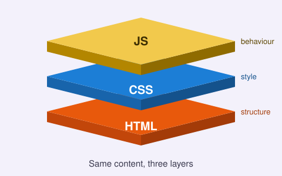
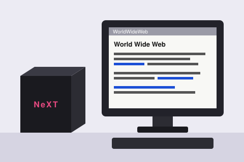
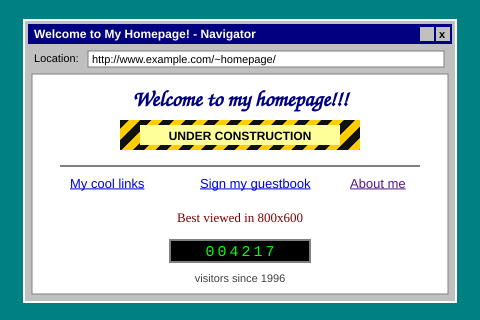

An experiment in layers
Every website you visit is built from three languages, stacked on top of each other. HTML describes what the content is. CSS describes how it looks. JavaScript describes how it behaves.
This page lets you add and remove those layers yourself. The words, images and tables stay exactly the same the whole time. Only the layers change, so you can see what each one contributes.
- Start with HTML only, the way browsers showed pages in the early 1990s.
- Add 90s styling to see how the web looked around 1996.
- Add modern CSS for today's layout, colour and typography.
- Add JavaScript for interaction and a little motion.

1991 HTML gives the web its structure
In March 1989, Tim Berners-Lee, a software engineer at CERN, wrote a proposal for a system to help physicists share documents. By the end of 1990 he had a working web server, a browser called WorldWideWeb, and a simple language to write pages in: HTML, the HyperText Markup Language.
In August 1991 the project was announced publicly, and the first website, at info.cern.ch, explained what the web was. It began:
The WorldWideWeb (W3) is a wide-area hypermedia information retrieval initiative aiming to give universal access to a large universe of documents.

HTML says nothing about colour or layout. It only says what each piece of content is:
<h1>to<h6>for headings<p>for paragraphs<a>for links to other documents, the "hyper" in hypertext<ul>,<ol>and<li>for lists<img>for images, added in 1993 with the Mosaic browser
That's still true today. A working HTML page can be this short:
<!DOCTYPE html>
<html lang="en">
<head>
<meta charset="utf-8">
<title>My first page</title>
</head>
<body>
<h1>Hello, web!</h1>
<p>This is a <a href="https://info.cern.ch">link</a>.</p>
</body>
</html>Browsers come with built-in default styles for every element: headings are big and bold, links are blue and underlined. That's why a page with no CSS at all is still readable.
1994–1999 The 90s web: tables, fonts and GIFs
In 1993 the Mosaic browser showed images and text on the same page, and the web took off. Its developers went on to build Netscape Navigator in 1994, and Microsoft answered with Internet Explorer in 1995. The two companies raced each other to add features, and that rivalry became known as the browser wars.
There was no good way to style pages yet, so authors used what HTML offered, plus some tricks it was never designed for:
<font face="Arial" color="red">to change text, one tag at a time<table>layouts to place columns and sidebars, often nested many levels deep- transparent 1×1 "spacer GIFs", stretched to push things into position
bgcolorand tiled background images on the<body>- Netscape's
<blink>and Internet Explorer's<marquee>
Pages often had a visitor counter, a guestbook and an animated "under construction" sign. Content and presentation were tangled together, so changing a site's look meant editing every single page.

The 90s styling layer recreates that look. Back then it took presentational HTML; here it comes from one stylesheet, so the HTML doesn't have to change.
1996 CSS separates content from presentation
In October 1994, Håkon Wium Lie, who was working with Tim Berners-Lee at CERN, proposed Cascading HTML Style Sheets. Bert Bos joined him, and in December 1996 CSS level 1 became a W3C Recommendation.
The idea is simple: HTML says what things are, and a separate stylesheet says how they look. One rule can style every heading on every page of a site:
h2 {
font-family: system-ui, sans-serif;
color: #5b4bdb;
border-bottom: 2px solid currentColor;
}Browser support was patchy for years, so table layouts survived well into the 2000s. Then CSS gained the features that made modern design possible:
- CSS2 (1998) brought positioning and media types.
- Media queries made responsive design possible. Ethan Marcotte coined the term "responsive web design" in 2010.
- Flexbox and Grid replaced layout hacks with real layout tools. Grid shipped in all major browsers in 2017.
- Custom properties (CSS variables) let one value, such as a theme colour, control a whole design.
Switching between 90s styling and modern CSS shows the idea at work: the same HTML gets two completely different designs.
1995 JavaScript makes pages behave
In May 1995, Brendan Eich wrote the first version of JavaScript at Netscape in about ten days. It was briefly called Mocha, then LiveScript, and was renamed JavaScript before Netscape Navigator 2.0 was released. It was standardised as ECMAScript in 1997.
JavaScript can read and change a page while you're looking at it, through the Document Object Model (DOM). Early uses were small, such as checking forms and swapping images on hover. Over the following years it changed what the web could do:
- 2005: Jesse James Garrett named "Ajax", pages that fetch data without reloading. Gmail and Google Maps were early examples.
- 2006: jQuery smoothed over the differences between browsers.
- 2008: Google Chrome launched with V8, a much faster JavaScript engine.
- 2009: Node.js let JavaScript run on servers.
- 2015: ES2015 (ES6) added modules, classes, arrow functions and promises.
Used well, JavaScript makes a page more helpful without getting in the way. Used carelessly, it makes pages slow and fragile. The JavaScript layer on this page adds only a few small things, and each one is marked with a ⚡ JS label.
Milestones
| Year | Technology | Milestone |
|---|---|---|
| 1989 | Web | Tim Berners-Lee proposes an information system at CERN |
| 1990 | HTML | The first web server and browser run at CERN |
| 1991 | HTML | The first website, info.cern.ch, goes public |
| 1993 | HTML | NCSA Mosaic shows images and text on the same page |
| 1994 | Web | Netscape Navigator is released and the W3C is founded |
| 1994 | CSS | Håkon Wium Lie proposes Cascading HTML Style Sheets |
| 1995 | JavaScript | Brendan Eich creates JavaScript at Netscape |
| 1995 | Web | Microsoft releases Internet Explorer 1.0 |
| 1996 | CSS | CSS level 1 becomes a W3C Recommendation |
| 1997 | JavaScript | ECMAScript 1 standardises the language |
| 1998 | CSS | CSS2 adds positioning and media types |
| 2005 | JavaScript | "Ajax" is named: pages update without reloading |
| 2008 | JavaScript | Chrome launches with the V8 engine |
| 2010 | CSS | Ethan Marcotte coins "responsive web design" |
| 2014 | HTML | HTML5 becomes a W3C Recommendation |
| 2015 | JavaScript | ES2015 modernises the language |
| 2017 | CSS | CSS Grid ships in all major browsers |
By the numbers
- 18 elements described in the first HTML document, "HTML Tags", in 1991
- 10 days to write the first version of JavaScript
- 2 years from the first CSS proposal to CSS level 1
- 3 core languages every browser understands: HTML, CSS and JavaScript
Your turn
Without JavaScript, a form can only send its answers off and load a new page. There's no server behind this one, so you'll just land back here. With JavaScript, the form can respond instantly.
Every layer is optional
Did you notice that the page worked at every step? With only HTML you could read every word, follow every link and send the form. CSS made it easier and nicer to read, and JavaScript made it more interactive, but neither was required.
This approach is called progressive enhancement: start with content that works everywhere, then add layers for the browsers and people that can use them. It makes sites faster, sturdier and more accessible. If a stylesheet fails to load or a script breaks, the content is still there.
The power of the Web is in its universality. Access by everyone regardless of disability is an essential aspect.